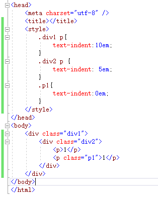
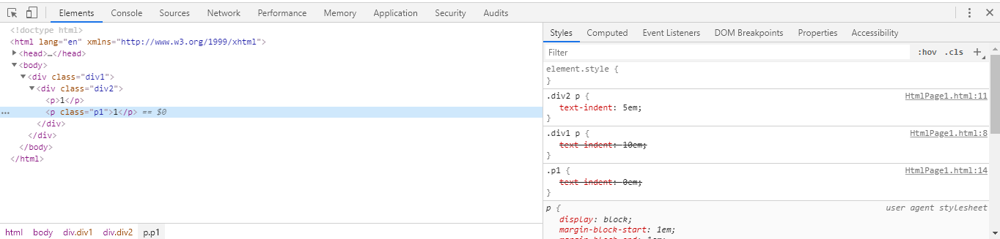

1、问题起因（在一次偶然编写css发现的，.div2 p>.div1 p>.p1，然后做了测试并找查相关资料）


2、解决方案
首先看哪一级的权重高
1、!important，加在样式属性值后，权重值为 10000
2、内联样式，如：style=””，权重值为1000
3、ID选择器，如：#content，权重值为100
4、类，伪类和属性选择器，如： content、:hover 权重值为10
5、标签选择器和伪元素选择器，如：div、p、:before 权重值为1
6、通用选择器（*）、子选择器（>）、相邻选择器（+）、同胞选择器（~）、权重值为0
所以.div1 p的权重值为10+1=11，.div2 p的权重值为10+1=11，.p1的权重值为10
第二看哪一个离p标签的距离近
.p1>.div2 p>.div1 p
所以根据上述分析 .div2 p>.div1 p>.p1